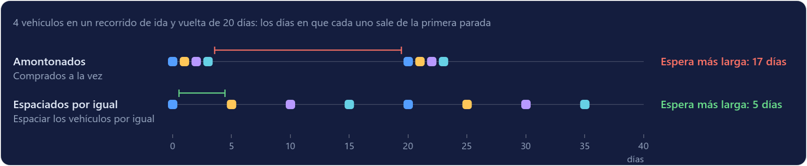

Líneas
Vehículos que comparten paradas, suman sus ganancias y guardan la distancia.
Una línea es una ruta que comparten tus vehículos. Sus paradas son de la línea, así que las cambias una vez y todos sus vehículos te siguen.
Crear una línea
- Abre un vehículo y pulsa Crear una línea bajo sus órdenes. Todos los vehículos que hacen las mismas paradas se unen a ella, estén donde estén del recorrido.
- Pon otro vehículo en ella con Unirse a una línea en la ventana de ese vehículo. Toma las paradas de la línea.
- Dejar la línea saca de nuevo un vehículo: conserva las paradas como propias.
- Clonar en un vehículo de una línea compra otro para la misma línea.
- Las paradas cambiadas en la ventana de cualquier vehículo cambian toda la línea, y lo mismo una marca de Carga completa o Transbordo.
La ventana de la línea
Haz clic en el nombre de la línea en la ventana de un vehículo, o abre Líneas en la barra superior (Ctrl+L). Dale a la línea un nombre y un color propios: su ruta se dibuja en el mapa con ese color.
| Botón | Qué hace |
|---|---|
| Añadir vehículo | Compra otro igual que el vehículo más nuevo de la línea. |
| Parar todos | Detiene todos los vehículos en su próxima estación; vuelve a pulsar para arrancarlos. |
| Renovar viejos | Renueva todos los vehículos que han superado su vida útil. |
| Cambia todos los vehículos de la línea por otro modelo. | |
| Eliminar | Haz clic dos veces. Los vehículos siguen haciendo las mismas paradas, cada uno por su cuenta. |
La ventana también suma lo que gana la línea: sus vehículos, su beneficio de este año y del anterior, lo llenos que salen y lo que cuestan de mantener. Compara tus líneas para ver qué rutas son rentables.
Espaciado uniforme
Los vehículos comprados a la vez, o retenidos por una carga completa, tienden a amontonarse y llegar uno tras otro. Marca Espaciar los vehículos por igual en la ventana de la línea:


- La línea cronometra un viaje de ida y vuelta y luego lo reparte: con 4 vehículos en un recorrido de 20 días, sale uno de la primera parada cada 5 días.
- Un vehículo que llega demasiado pronto a la primera parada espera allí, y sigue cargando mientras espera.
- Nunca espera más de un intervalo, así que un vehículo lento no puede retener al resto.